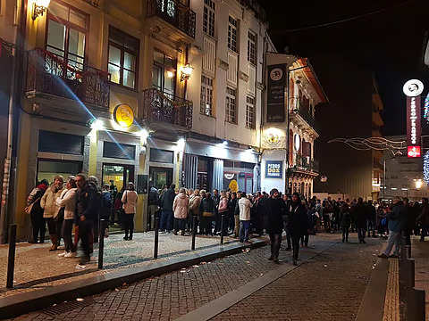
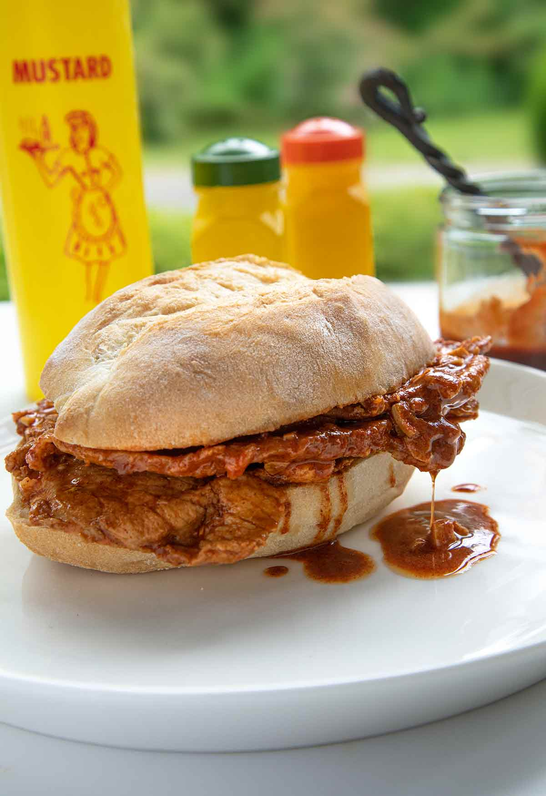

Galeria


Fundado em 1976 no coração do Porto, o Restaurante Conga tornou-se uma referência em bifanas picantes. O ambiente é familiar, e clientes de todas as idades apreciam a combinação perfeita de tempero e tradição.
Ao longo dos anos, a Conga manteve a receita original e o amor pelo detalhe, fazendo com que cada bifana seja preparada com atenção e carinho.
A estrela do menu é a bifana picante, marinada com especiarias secretas e cozinhada lentamente até atingir a perfeição. Servida em pão fresco, com molho suculento e pimentos, é impossível resistir.
Curiosidade: cada bifana demora cerca de 6 horas para marinar, garantindo sabor intenso e carne macia.
